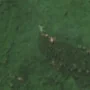
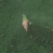

1,3 ha · Talea, oraș Comarnic
văzută schimbată prima dată pe 18 iun. 2026


Autorizația cea mai apropiată nu acoperă tăierea: autorizația începe după ce schimbarea se vedea deja.
APV 2600009401320 · Ocolul Silvic Sinaia, valabilă 25 aug. 2026 – 31 dec. 2026, la 0 m
Terenul: pădure de stat, după amenajamentul silvic publicat.
Ce se vede în poze: În poza detaliată zona marcată era acoperită de pădure deasă, iar în poza «după» apare un petic gol, deschis la culoare, cu margini clare, în timp ce pădurea din jur rămâne verde. Asta arată că arborii au fost tăiați de curând.